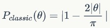
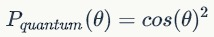

我们所生活的，是这么一个世界：
在这里，人要么在这里，要么在那里，不可能同时既在这里又在那里；
在这里，你一次只能吃一个煎饼果子，不能同时既吃煎饼果子有吃杂粮煎饼；
在这里，一切都几乎是确定的，只不过我们几乎不可能知道一切的初始状态；
在这里，牛顿住在一切。


那么我们看到的应该是两条明亮的细条纹，因为粒子只能从走从源到缝的直线，从而只有两条笔直的路径，最多加上空气中的散射。
那么我们看到的应该是有两个较亮区而一些较暗区的连续分布，关键是，不应该出现明显的暗条纹。

量子理论的数学部分，是高度算符化的（出去波函数不看）：
等式的左面，是能量算符；等式的右面，整体就是哈密顿算法。
哈密顿算符可以分解为左边的动能算符和右边的势能算符。
这一套方案的基本思路与分析力学是完全相同的，只不过是算符化了。
粒子可以“同时”处于多个状态
更准确地说，
是粒子可以“同时”在多个状态上具有非零的概率：薛定谔的猫
由数学公式结合第一点的连续性可知：
如果一个量子系统的动能部分比一个势垒要低，那么在经典情况下这个鸿沟无法逾越，在量子系统中波函数却可以“渗透”进这个势垒，甚至穿越它。
这就是量子隧穿效应。
值得注意的是，上述猫效应和隧穿效应从根本上说，并不是量子系统所独有的。
一个经典系统在数学上一样可以具有这些特性，只要要求经典分布的分布函数也是连续与一阶导连续的，且粒子的运动满足这种经典分布。
量子的独特本质：复几率分布
严格说来，这不是一个真实的实验，而只是一个思想实验。
贝尔不等式的本质，是使用经典几率统计的手段给出了在满足定域性和实在性这两个条件的情况下，这么一个经典分布系统中两个处于纠缠状态的粒子在实验中所应该遵守的不等式关系。
贝尔不等式破缺的核心关键，在于人们普遍认为物理系统必然是满足定域性与实在性的，而量子理论打破了这一常规。
这里关键点有四个：
所有相互作用必须在同一个时空点上完成
必须存在一个实体来传递物理影响
量子纠缠系统中的波函数塌缩看起来就是瞬间不通过任何媒介地从A点传递到了B点。
假定存在一个目前无法观测到但本质上可观测的物理实体，连接着AB两地的物理对象。
物理实体的物理量至少必须为实数，从而几率分布必须是经典几率分布。
多个量子系统的特征量子数满足一个确定的约束条件，从而当其中一部分的状态确定后剩下的状态同时也被确定而无需任何外界操作。
实体性要求复数性质的量子几率波解释不能成立，因此量子纠缠就要求了定域实在的隐变量在一开始就参与了整个物理过程，我们的观测并不引起量子系统的塌缩，而是“恰好”观测到了隐变量在此时所给出的测量值。
这样的测量值与承认复值的几率分布的结果不同。
假定A与B两个光子处于量子纠缠中，相隔遥远，然后同时测量偏振性。
A处与B处的检偏器夹角θ；检偏器发现光子通过成为测得光子。
按照隐变量的逻辑，A处测得光子与B处测得光子的相关度是：
而根据量子的复几率幅所得到的相关度是：
上面的几率分布已经存在了极大的不同，但在实际测量的时候，AB两处检偏器的夹角θ是不确定的，所以需要引入一些统计的手段。
利用上述几率分布，在经典情况下我们有贝尔不等式(CHSH不等式)：

式子中的Pxy表示A地测得x方向同时B地测得y方向的几率（可正可负）。
而在正统的量子诠释下，采用的是余弦函数形的几率分布，从而不等式可以有破缺的情况——
在量子理论下，上述不等式的左面可以达到的最大值是2√2，从而是大于右面的2的，因此不等式被打破。
而这2√2的出现，就是因为量子的几率分布是余弦函数式的，从而在45º的位置可以出现比经典几率分布更大的几率值。
物理过程的定域性是否必然不可打破？
在广义相对论的引力场能量的计算中，我们发现目前最合适的一种定义下，引力场的能量是非定域的。
实体性要求物理量必须是实值的，至少可观测物理量必须是实值的。
但我们也知道，在AB与AC效应中，原本被认为不具有实体性的波函数的相位却发挥了实实在在的作用，而波函数是复值的。
贝尔不等式的破缺基本宣布了隐变量理论的破产。
但非定域隐变量理论是否可以幸存下来？
Kochen-Specker定理告诉我们：上下文无关的实在性理论与量子理论不相容。
要么放弃实在性，要么认为存在隐变量，但其具体性质依赖于如何测量。
基于KS定理的Conway-Kochen定理则更进一步论证了机械决定论必然是错的。
上述特点体现在演化规律上，最核心的体现就是虽然分布同样都满足扩散方程，但量子系统的薛定谔方程带有虚数单位i，这使得量子分布本身除了波幅外，还多了相位这一重要信息。
如果波函数的取值范围可以是四元数体呢？
量子理论本身可以有三种不同的描述方法
（同时则可以有理论上无穷种诠释）
这种描述方法，就是经典的薛定谔方程，计算系统的波函数，再通过波函数给出系统处于不同量子态上的几率。
它还可以分成三种绘景：
算符不随时间改变的薛定谔绘景
波函数不随时而变的海森堡绘景
算符与波函数都随时间改变的相互作用绘景
波动力学的表示方式适合于连续系统，尤其适合用于理解量子隧穿效应。
矩阵力学和波动力学原则上是等价的——算符所得到的值以矩阵本征值的形式存在
对有限状态或可数无限个状态的情况可以有较直观的视野
在矩阵力学中使用薛定谔绘景的话，我们可以认为矩阵同样给出了此刻与下一刻的态矢之间的演化关系。
同样的矩阵表达方法我们也可以用在复杂网络上的扩散与传播问题中，比如这篇文章。
也就是说，如果我们构造一个有限节点的复杂网络，其上传播的属性可以在复数域上取值，那么这个复杂网络上的扩散方程在形式上就和矩阵力学的演化方程相同。
而复杂网络上的扩散与传播，说到底就是两个节点之间的属性传递，从而是一种连接或者说传播子的概念。
路径积分的概念与波动力学关系比较密切
它可以看做是量子版的惠更斯原理
其核心思想就是：
粒子当前状态是由从初态到当前状态的所有可能路径的总贡献来决定的。
路径积分（以及更加宽泛的构型积分）那种对所有可能的路径求和的思路，已经作为一种特殊的工具在很多领域得到了推广。
比如金融领域有一门课就叫“金融市场的路径积分”。
一个有趣的启示：一个粒子其实不是一个粒子，而是这个粒子所有可能的状态构成的一个系宗。
量子理论的诠释有很多很多，而且，事实上只要你愿意，就可以有无穷多种诠释。
究其根本是因为量子理论涉及到一些无法直接观测到的物理实体，比如波函数。
而另一方面则是因为量子理论与我们日常生活的世界的行为差距太大。
很多人会认为物理理论中承认了人的意识的重要性，这种普遍的都市传说一般的大众误解的起源，就是哥本哈根诠释中的那一条：观测会导致波函数的塌缩。
意识成了“凌驾于物理规律之上”的“能决定物理结果”的特殊的存在。
人成为了有物理理论支持的世界核心
薛定谔的猫中猫不但处于生死叠加态，也被剥夺了观测自己的权力。
就让尘归尘土归土，上帝的归上帝，物理的归物理。
退相干诠释的绝大部分内容与思想，都与哥本哈根诠释相同，只差了一点：
测量的过程是一个包含大量粒子的系统与单个被试粒子发生大量频繁相互作用的过程，从而并不是观测导致塌缩，而是观测过程中那些数量巨大且频繁的相互作用造成了被试粒子发生了退相干。
量子退相干本身不是一种诠释，而是一类标准的量子力学过程——含有量子叠加项的结果在一段时间内的平均会因为其中一个叠加项的波函数周期太短而被抵消为零。
而在观测或者说实验环境下，测量的时间相对于微观过程来说总是足够长的，而测量系统对被测对象的作用所带来的周期又总是足够短的。
首先要说明的，就是量子理论的多重宇宙诠释，与宇宙学上的多重宇宙或者膜宇宙学上的多重宇宙，是一点关系都没有的。
多重宇宙诠释认为当哥本哈根诠释所认为的“测量”发生的时候，系统并没有简单地塌缩到某个确定的状态，而是将整个宇宙彻底分裂成了若干个宇宙——有多少可能的状态就分裂出多少个宇宙。
而观测者则以波函数所给出的几率“随机”地“掉落”到了所有这些宇宙中的某一个中。
虽然贝尔不等式的破缺表明了定域实在的隐变量理论肯定是没希望了，甚至KS定理进一步表明上下文无关的实在性隐变量理论也没戏，但原则上说，隐变量理论这个流派并没有死绝。
原则上说，凡是不承认波函数的实在性而只认为它描述了行为但背后的物理实体是某种至少目前无法被观测到对象的理论，都是隐变量理论。
不知道大家注意到没有，这个“至少目前无法被观测到的对象”的提法本身显得非常地不具有“可证伪性”，但却堂而皇之地自称为物理理论而非形而上学或者伪科学……
前面已经提过，量子理论的关键就在于即便只有单个粒子，其行为也满足波函数所描述的几率分布。
同时，我们可以从波函数中“提取”出系统的物理属性。
此时我们发现，同一个对象的某些物理量之间，存在经典物理中所没有的特性：对一个的测量，会影响到对另一个的测量。
比如，当我们可以以毋庸置疑的精度测量粒子的位置时，它的动量的不确定度为无穷大。
这就构成了一组著名的不确定原理：
位置-动量不确定性
时间-能量不确定性
由于历史原因与翻译问题，我国曾已读将不确定关系翻译为“测不准原理”
不确定原理的本质是波函数上的算符之间的非对易性，从而这些算符对应的物理量无法同时获得，与测量没有丝毫关系。
量子系统允许同时在多个状态上存在，比如既是活的又是死的。
但当测量发生的时候，则必须塌缩到测量相关的某一个基态上。
量子超高速计算依赖于混合态：对一个量子态的处理等于同时对若干个基态做相同的处理。
量子塌缩过程是一个真随机过程
量子纠缠使得相隔遥远的两地可以获得同一组随机生成的物理量
量子态不可克隆原理确保了上述过程得到的物理量是绝对安全的
基本思路就是使用量子理论的复值几率分布来替代经典逻辑与经典统计手段。
想得很有趣，但事实上都不如金融市场的路径积分来得靠谱。
模拟退火算法与量子退火算法
经典随机行走与量子随机行走
经典生命游戏
量子生命游戏
量子体系衍生而来了不确定原理、量子纠缠、隧穿效应、量子态不可克隆、量子计算与量子逻辑。
但量子体系的理论诠释也始终没有一个定论。